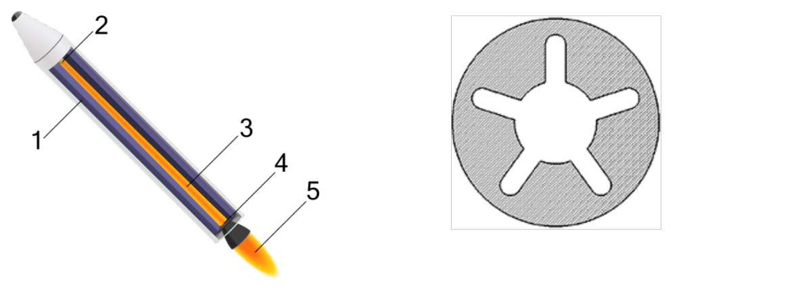
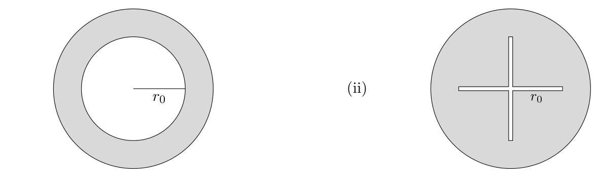
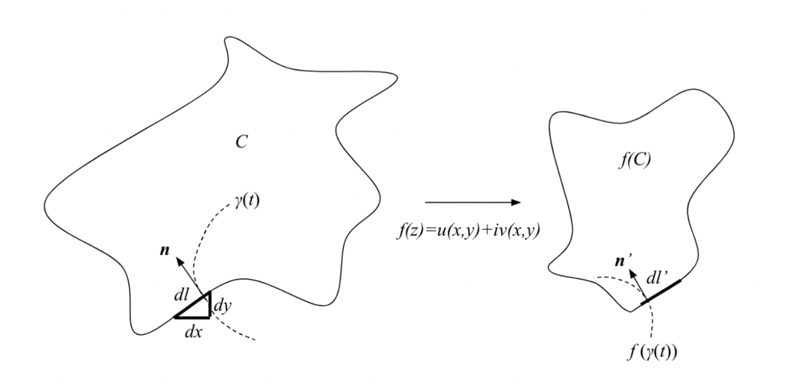
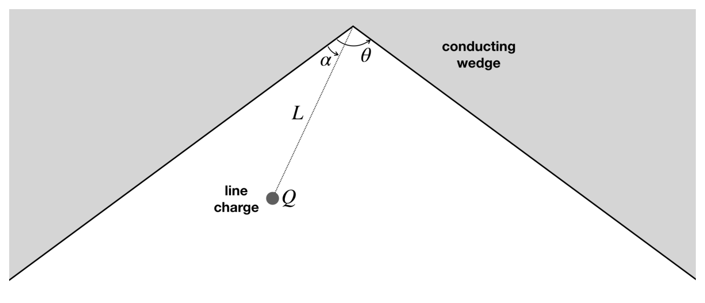
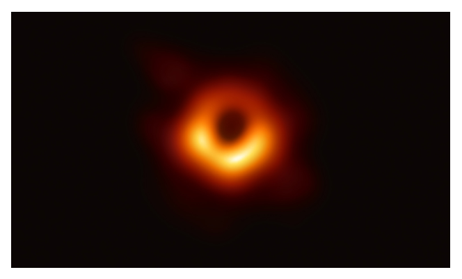

T1: Booster
In this problem, we explore a simplified model of Solid Rocket Boosters (SRBs). SRBs are supplements to liquid rockets and provide enormous thrust at liftoff at the expense of lower specific impulse. They have a pretty simple design — a tube containing solid propellant with a central cavity that acts as a combustion chamber. As the solid fuel burns (deflagrates), gasses are forced out of the combustion chamber through a nozzle, producing thrust. It is desirable to choose a combustion chamber design which produces constant thrust (to reduce structural load on the spacecraft) and also have constant internal pressure and temperature (to reduce stress on the SRB). Below a diagram, along with a typical shape of the combustion chamber.
Figure 1

The structure of an SRB (left) and the shape of a typical chamber (right)
Data:
- Rate of vaporization of surface of fuel:
- Length of combustion chamber:
- Radius of combustion chamber:
- Density of propellant:
- Molar mass of exhaust gas:
- Temperature inside chamber:
- Ideal gas constant:
(a) Find the burn rate of fuel (in terms of ) as a function of time for the following designs for the combustion chamber. Assume that the combustion chamber never reaches the walls of the SRB.
Designs (i) and (ii)

(i) An annular (hollow cylindrical) channel of inner radius . (ii) A cross-shaped (plus-shaped) channel of half-extent .
Answer the following for design i.
(b) Compute the thrust as a function of time. Assume the temperature and pressure of the chamber stay constant, and the density of the gas is .
(c) Is the assumption of constant internal conditions for this design valid?
(d) Now assume that the temperature is constant, but the pressure changes. Estimate to within a factor of 2 the pressure inside the chamber as a function of time.
Fonte: Testo (PDF) — p.4 Topic: Fluid Mechanics, Thermodynamics Metodi: Continuity Equation, Conservation of Momentum, Ideal Gas Law, Physical Modeling Competenze: Mathematical Modeling, Physical Reasoning Objects: Tube, Gas
T1: Booster
In questo problema, esploriamo un modello semplificato dei Solid Rocket Booster (SRB). Gli SRB sono integratori dei razzi liquidi e forniscono un enorme impulso al decollo a scapito di un impulso specifico inferiore. Hanno un design piuttosto semplice: un tubo contenente propellente solido con una cavità centrale che funge da camera di combustione. Mentre il combustibile solido brucia (deflagrata), i gas vengono forzati fuori dalla camera di combustione attraverso un fumo, producendo spinta. È opportuno scegliere una progettazione di camera di combustione che produca una spinta costante (per ridurre il carico strutturale della sonda) e che abbia anche una pressione e una temperatura interne costanti (per ridurre la tensione sul SRB). Sotto un diagramma, insieme a una forma tipica della camera di combustione.
[figura] Figura 1 La struttura di un SRB (a sinistra) e la forma di una camera tipica (a destra)
**Dati: **
- Tasso di vaporizzazione della superficie del carburante:
- Lunghezza della camera di combustione:
- Radius della camera di combustione:
- Densità del propellente:
- Massa molare del gas di scarico:
- Temperatura all’interno della camera:
- Costante di gas ideale:
a) Indicare il tasso di combustione del carburante (in termini di ) in funzione del tempo per le seguenti progettazioni della camera di combustione. Supponiamo che la camera di combustione non raggiunga mai le pareti del SRB.
[figura] Disegni (i) e (ii) (i) Canale anulare (colline cilindrica vuota) di raggio interno . - un canale di forma incrociata (più forma) di mezzo estensione .
Rispondi al seguente per il progetto i.
b) Calcolare la spinta come funzione del tempo. Se la temperatura e la pressione della camera restano costanti, la densità del gas è .
c) È valida l’ipotesi di condizioni interne costanti per questo progetto?
(d) Supponiamo che la temperatura sia costante, ma che la pressione cambie. Estimare entro un fattore 2 la pressione all’interno della camera in funzione del tempo.
Fonte: Testo (PDF) — p.4 Topic: Fluid Mechanics, Thermodynamics Metodi: Continuity Equation, Conservation of Momentum, Ideal Gas Law, Physical Modeling Competenze: Mathematical Modeling, Physical Reasoning Objects: Tube, Gas
T2: The Complex Potential
A Conformal Transformation
A complex number can be thought of as a mathematical object that “stores” two real numbers. An element of the set of complex numbers can be written as:
where is called the imaginary unit, and . With this, one can think of constructing complex-valued functions — namely, a function :
f(z) = f(x + iy) = w(x, y) + iu(x, y) \tag{1}
Since complex numbers encode two real numbers and , we can consider complex-valued functions yielding two real-valued functions and that depend on . and , being real-valued multivariable functions, allow us to extend calculus on to . You are given that the composition of two differentiable complex differentiable functions yields another complex differentiable function on the appropriate domain.
(a) Starting from the definition of a derivative in single-variable calculus, show that if given in (1) is complex differentiable, and satisfy:
(b) Show that and are solutions to the 2D Laplace equation:
\nabla^2 \phi = \frac{\partial^2 \phi}{\partial x^2} + \frac{\partial^2 \phi}{\partial y^2} = 0 \tag{2}
(c) A parametrized curve on the complex plane can be thought of as a function that takes a real number and yields a point on the complex plane. Two parametrized curves and intersect at some point ; tangent lines of these two curves at form an angle . Show that the tangent lines of the curves and at form the same angle , where is the composition function.
A Conformal Transformed Electrostatic System
We know from electrostatics that in a charge-free region, the electrostatic potential satisfies the Laplace equation . As you’ve shown above, this motivates the idea of defining a complex differentiable function whose real part is the electrostatic potential — complex differentiability encodes the fact that the electrostatic potential satisfies (2). Given a 2D electrostatics problem in a charge-free region, we define the complex potential as:
where is an appropriate real-valued function that satisfies the conditions derived in question 1, making a complex differentiable function. You are given the uniqueness theorem: the 2D Laplace equation has a unique solution that satisfies specified boundary conditions.
(d) Given a 2D electrostatics problem and an appropriate complex potential , write the derivative in terms of the and components of the electric field: .
(e) Show that the function satisfies the 2D Laplace equation with the boundary condition while .
(f) The complex logarithm function is defined at as for , . Show that the upper-half plane (points on the complex plane with a positive imaginary part), under the logarithm map, turns into a strip bounded by and . You may assume that the logarithm function is complex differentiable on and that its inverse is for this problem.
(g) Starting from the electrostatic potential in (e), find the electrostatic potential in the region between two infinitely large capacitor plates separated by distance . Carefully argue why this method yields the correct solution.
(h) Show that the function maps the unit circle , centered at the origin, to the real line and the interior of the circle to . Determine the inverse of the function and explain why there’s a one-to-one correspondence between points bounded by and .
(i) Find the electrostatic potential in the region between an infinite rod of charge density and a grounded concentric conducting cylindrical shell of radius .
(j) Now consider the same infinite rod suspended above a grounded conducting plate at a height . Use your results for questions (h) and (i) to derive the electrostatic potential in the region above the plate.
(k) Consider the curve shown in the figure below. You are given that the image of is . If we take some line element on the curve , find the scaling factor for its image of . This is known as a conformal transformation in which the mapping is a holomorphic function.
(l) Take to represent a conductive surface. If is an appropriate solution to the 2D Laplace equation satisfying , find expressions for the surface at , the electrostatic potential satisfying , and the surface charge at from .
(m) Verify that your results for questions (k) and (l) are consistent.
Curve and its image

A curve with line element (components , ) and outward normal , mapped by to the curve with line element and normal .
On the Electrostatic Interaction between a Line Charge and a Conducting Wedge
We can apply the knowledge we have gained here to solve a familiar physical puzzle. This puzzle has been widely known and popular in specific cases (e.g. easily solvable using the image method), but it lacks generality. Consider a grounded, infinitely large, conducting wedge with an opening angle . Inside the wedge, there is a thin, infinitely long, straight line with a uniform charge density of per unit length, positioned parallel to the edge of the wedge. The distance between the line and the edge is , the plane that pass through both the line and the edge make an angle with a face of the wedge.
Line charge inside a conducting wedge

A grounded conducting wedge of opening angle ; a line charge at distance from the edge, with the plane through the line and the edge making angle with a face.
(n) Find the direction and the magnitude of the electrical force acting on the line per unit length. Solve for the general case of , then evaluate your answer in the unit of , for and .
Fonte: Testo (PDF) — p.5 Topic: Electrostatics, Mathematics Metodi: Electric Potential Method, Calculus-Integration, Symmetry Argument, Superposition Principle Competenze: Mathematical Modeling, Physical Reasoning Objects: Capacitor, Wedge, Cylinder
T2: Il potenziale complesso
Una trasformazione conformale
Un numero complesso può essere pensato come un oggetto matematico che “stimola” due numeri reali. Un elemento dell’insieme di numeri complessi può essere scritto come:
dove è chiamata unità immaginaria e . Con questo, si può pensare di costruire funzioni a valore complesso , vale a dire, una funzione :
f(z) = f(x + iy) = w(x, y) + iu(x, y) \tag{1}
Poiché i numeri complessi codificano due numeri reali e , possiamo considerare funzioni a valore complesso che producono due funzioni a valore reale e che dipendono da . Le funzioni multivariabili e , essendo a valore reale, ci permettono di estendere il calcolo su a . Vi viene dato che la composizione di due funzioni differenziabili complesse differenziabili produce un’altra funzione differenziabile complessa sul dominio appropriato.
a) Partendo dalla definizione di una derivata nel calcolo a variabile singola, dimostrare che se indicato nel (1) è differenziabile complesso, e soddisfano:
b) Indicare che e sono soluzioni dell’equazione 2D di Laplace:
\nabla^2 \phi = \frac{\partial^2 \phi}{\partial x^2} + \frac{\partial^2 \phi}{\partial y^2} = 0 \tag{2}
c) Una curva parametrizata sul piano complesso può essere considerata come una funzione che prende un numero reale e produce un punto sul piano complesso. Due curve parametrizate e si intersecano in un certo punto ; le linee tangenti di queste due curve a formano un angolo . Indicare che le linee tangenti delle curve e a formano lo stesso angolo , dove è la funzione di composizione.
Un sistema elettrostatico trasformato conformi
Sappiamo dall’elettrostatica che in una regione libera da carica, il potenziale elettrostatico soddisfa l’equazione di Laplace . Come abbiamo visto sopra, questo motiva l’idea di definire una funzione differenziabile complessa la cui parte reale è il potenziale elettrostatico la differenziabilità complessa codifica il fatto che il potenziale elettrostatico soddisfa (2). Data una problematica di elettrostatica 2D in una regione senza carica, definiamo il potenziale complesso ** come:
se è una funzione ad un valore reale appropriato che soddisfa le condizioni di cui alla domanda 1, rendendo una funzione differenziabile complessa. Vi viene dato il teorema dell’unicità: l’equazione di Laplace 2D ha una soluzione unica che soddisfa le condizioni di confine specificate.
d) Considerato un problema di elettrostatica 2D e un potenziale complesso appropriato , scrivere la derivata in termini dei componenti e del campo elettrico: .
(e) Indicare che la funzione soddisfa l’equazione 2D Laplace con la condizione di confine mentre .
f) La funzione logaritmica complessa è definita a come per , . Mostra che il piano della metà superiore (punti sul piano complesso con una parte immaginaria positiva), sotto la mappa del logaritmo, si trasforma in una striscia delimitata da e . Si può supporre che la funzione logaritmica sia complessa differenziabile su e che il suo inverso sia per questo problema.
g) A partire dal potenziale elettrostatico di e, trovare il potenziale elettrostatico nella regione tra due piastre di condensatore infinitamente grandi separate da distanza . Argumentare attentamente perché questo metodo dà la soluzione corretta.
h) Indicare che la funzione mappa il cerchio unitario , centrato all’origine, alla linea reale e all’interno del cerchio a . Determina l’inverso della funzione e spiega perché esiste una corrispondenza uno a uno tra i punti delimitati da e .
(i) Trovare il potenziale elettrostatico nella regione tra una barra infinita di densità di carica e una conchiglia cilindrica conduttrice concentrica di raggio .
(j) Ora consideriamo la stessa canna infinita sospesa sopra una piastra conduttrice a terra ad un’altezza . Utilizzare i risultati per le domande h) e i) per derivare il potenziale elettrostatico nella regione sopra la targa.
k) Considerare la curva mostrata nella figura seguente. Vi viene data che l’immagine di è . Se prendiamo qualche elemento di linea sulla curva , trovi il fattore di scalazione per la sua immagine di . Questo è noto come una trasformazione conforme ** in cui la mappatura è una funzione olomorfa **.
L) Prendere per rappresentare una superficie conduttiva. Se è una soluzione appropriata dell’equazione 2D Laplace che soddisfa , trovare espressioni per la superficie a , il potenziale elettrostatico soddisfa e la carica superficiale a da .
m) Verificare che i risultati delle domande k) e l) siano coerenti.
[fig.] Curva e la sua immagine Una curva con elemento di linea (componenti , ) e normale , mappata da alla curva con elemento di linea e normale .
sull’interazione elettrostatica tra una carica di linea e una cucina di condotta
Possiamo applicare le conoscenze che abbiamo acquisito qui per risolvere un puzzle fisico familiare. Questo puzzle è stato ampiamente conosciuto e popolare in casi specifici (ad esempio: La struttura di un’immagine è molto più semplice da risolvere usando il metodo di immagine), ma manca di generalità. Considerate una cucina conduttiva a terra, infinitamente grande, con un angolo di apertura . All’interno della cucina, c’è una linea retta sottile, infinitamente lunga, con una densità di carica uniforme di per unità di lunghezza, posizionata parallela al bordo della cucina. La distanza tra la linea e il bordo è , il piano che attraversa sia la linea che il bordo fa un angolo con una faccia della cuccia.
carica di linea all'interno di una ciglia conduttrice
Un’angolazione di apertura con un’angolazione di conduttore a terra; una carica di linea a distanza dal bordo, con il piano attraverso la linea e l’angolo di apertura con una faccia.
n) Indicare la direzione e la magnitudine della forza elettrica che agisce sulla linea per unità di lunghezza. Risolvi il caso generale di , poi valuta la tua risposta nell’unità di , per e .
Fonte: Testo (PDF) — p.5 Topic: Electrostatics, Mathematics Metodi: Electric Potential Method, Calculus-Integration, Symmetry Argument, Superposition Principle Competenze: Mathematical Modeling, Physical Reasoning Objects: Capacitor, Wedge, Cylinder
T3: General Relativity
The Alphabet of Spacetime Metrics
In multivariable calculus, we study the generalization of line elements to various coordinate systems. A coordinate system in can be described by a function that takes a point and outputs the three coordinates describing the same point in the coordinate system. For example, the describing spherical coordinates would be defined as . As there must be a unique representation of each point in in the coordinates (ex. cannot correspond to two points on the 3D space) there must be a one-to-one correspondence between points in and points described in coordinates. Hence, there’s a well defined inverse function . In spherical coordinates, for instance, .
Suppose we have a coordinate system . We ask a very important question: if we make an increment of in each in the coordinates, what’s the physical distance between the starting and the finishing points in ? In other words, what’s the distance between the points and ? This distance is known as the line element generated by a coordinate system . If the coordinate system is orthogonal, meaning the basis vectors , , are all mutually perpendicular, we know that the physical displacements in taking are in perpendicular directions in , so we can find the line element by Pythagoras’s theorem.
(a) Show that for an orthogonal coordinate system in an arbitrary , the square of the line element has the form where each is a function of . Find an expression for in terms of the derivatives of or .
We can think of physical observers as coordinate systems. If an arbitrary observer moving in space-time measures an event , the coordinates seen by the observer can be expressed as by some function . It turns out that special relativity can be described with the math we’ve developed so far. In particular, we can consider measuring space-time lengths by integrating the line element along paths in space-time. You are given that for any observer with the coordinate system , the line element is given by .
(b) It’s a well-known result of special relativity that space-time lengths are measured to be the same regardless of the frame. Resolve the twin paradox by integrating the line element along the spaceship twin’s world-line.
It turns out that physics in weak gravitational fields can also be described with the math we’ve developed so far. Consider a 1 dimensional system with a time-independent gravitational potential .
(c) An important postulate of general relativity states that observers that move solely under the influence of gravity take the path with the longest space-time length. Suppose an observer of this system takes a path parameterized by a variable : . Show that the line element generates equations of motion that are consistent with Newton’s laws (neglecting special relativity).
Hint
Refer to the Euler-Lagrange equation, but you do NOT have to perform the derivation to solve this problem.
(d) Derive a statement of time dilation at a point .
The Spacetime Metric of a Black Hole
As we saw in part 1, the Minkowski metric describes geometry of spacetime in special relativity and is given as
In general relativity, the result is more complex, and we describe spacetime via the Schwarzschild metric, a solution of Einstein’s equations under spherical symmetry. The spacetime interval in spherical coordinates can be expressed in terms of proper time and the speed of light as
where is the coordinate time, is the radial coordinate, is the polar angle, is the azimuthal coordinate, and is the Schwarzschild radius of a massive body. The Schwarzschild radius is related to the body’s mass by where is the universal gravitational constant.
General relativity describes gravity as the consequence of curving spacetime. Geodesics generalize straight lines to curved spacetime and are very useful as a result. In the following problem, the radial geodesic equation may be helpful:
where represents a Christoffel symbol. The relevant terms of are , , , and . Define , then we can get:
The Photon Sphere
In 2019, the first image of a black hole was taken in 2019 by the Event Horizon Telescope (EHT) at the center of the galaxy M87. The historic image of the black hole showcased a glowing ring of light surrounding the dark abyss known as the “photon ring.” In this region, light rays follow closed circular paths due to the strong gravitational pull of the black hole. When a photon follows a closed circular path on the photon ring, it can effectively orbit the black hole multiple times before either escaping to infinity or being captured by the event horizon. This phenomenon is known as the “photon sphere.”
Figure 2

Event Horizon Telescope Collaboration
In this problem, we will be analyzing the optical effects for an observer next to a black hole. Assume for an idealized case that the black hole has a mass and is uncharged and not rotating.
(e) Prove that the minimum radius of the black hole’s photon ring follows the relationship .
(f) Bill is near the black hole a distance away. Assume Bill’s width is where m. Sketch light ray trajectories showing how Bill could see his own back. Determine the range for the angle of view enabling this.
(g) Approximately what is the orbital period (in milliseconds) of a singular photon in coordinate time around the black hole. At what mass of a black hole would this time be greater than the visual reaction time of a human ms (meaning if you closed your eyes, it would take some time for you to visualize your back again)? Is this mass possible?
(h) Propose a method (realistic or not) for Bill to safely get close to the black hole without getting ripped apart by gravity. If you believe there is no possible method, then give your reasoning behind why. You might want to consult various sources for information. To simplify the process and avoid teams searching for data such as “shear stress of a human”, assume that Bill is a cylindrical object made of a material of your choosing that has a uniform density, a radius , and a length of m. Bill possesses exceptional engineering skills, enabling him to construct virtually anything, provided it satisfies the conservative the principles of physics.
(i) Let’s assume that the galaxy has stars, each emitting light isotropically with the same total power . Assume the stars are distributed uniformly throughout a spherical volume of radius . For an ideal case where the path of the light from the stars is not obstructed by any other celestial objects, estimate the expected number of photons from starlight that would contribute to the photon ring or fall in the event horizon per unit time.
Fonte: Testo (PDF) — p.8 Topic: Gravitation, Special Relativity Metodi: Newton’s Law of Gravitation, Lorentz Transformation, Calculus-Integration, Order-of-Magnitude Estimation Competenze: Mathematical Modeling, Estimation & Approximation Objects: Black Hole, Photon, Star
T3: Relatività generale
L’alfabeto delle metriche dello spazio-tempo
Nel calcolo multivariabile, studiamo la generalizzazione degli elementi di linea a vari sistemi di coordinate. Un sistema di coordinate in può essere descritto con una funzione che prende un punto e produce le tre coordinate che descrivono lo stesso punto nel sistema di coordinate. Ad esempio, le coordinate sferiche descritte sarebbero definite come . Poiché deve esserci una rappresentazione unica di ogni punto in nelle coordinate (es. non può corrispondere a due punti nello spazio 3D) deve esserci una corrispondenza uno a uno tra i punti di e i punti descritti nelle coordinate . Quindi, c’è una funzione inversa ben definita . In coordinate sferiche, ad esempio, .
Supponiamo di avere un sistema di coordinate . Chiediamo una domanda molto importante: se facciamo un incremento di in ogni nelle coordinate , qual è la distanza fisica tra i punti di partenza e di fine in ? In altre parole, qual è la distanza tra i punti e ? Questa distanza è nota come l’elemento linea generato da un sistema di coordinate . Se il sistema di coordinate è ortogonale, il che significa che i vettori base , , sono tutti reciprocamente perpendicolari, sappiamo che i spostamenti fisici nel prendere sono in direzioni perpendicolari in , quindi possiamo trovare l’elemento di linea con teorema di Pitagora.
a) Indicare che per un sistema di coordinate ortogonali in un arbitrario, il quadrato dell’elemento di linea ha la forma dove ogni è una funzione di . Trova un’espressione per in termini di derivati di o .
Possiamo pensare agli osservatori fisici come a sistemi di coordinate. Se un osservatore arbitrario in movimento nello spazio-tempo misura un evento , le coordinate viste dall’osservatore possono essere espresse come da una funzione . Risulta che la relatività speciale può essere descritta con la matematica che abbiamo sviluppato finora. In particolare, possiamo considerare la misurazione delle lunghezze spazio-tempo integrando l’elemento di linea lungo i percorsi nello spazio-tempo. Vi viene dato che per qualsiasi osservatore ** con il sistema di coordinate , l’elemento di linea è dato da .
b) È un risultato ben noto della relatività speciale che le lunghezze spazio-tempo sono misurate per essere le stesse indipendentemente dal quadro. Risolvi il paradosso dei gemelli integrando l’elemento di linea lungo la linea mondiale della nave spaziale gemella.
Risulta che la fisica in campi gravitazionali deboli può essere descritta anche con la matematica che abbiamo sviluppato finora. Considera un sistema a 1 dimensione con un potenziale gravitazionale indipendente dal tempo .
c) Un importante postulato della relatività generale afferma che gli osservatori che si muovono esclusivamente sotto l’influenza della gravità seguono il percorso con la lunghezza spaziale-tempo più lunga. Supponiamo che un osservatore di questo sistema prenda un percorso parametrizzato da una variabile : . Mostrare che l’elemento di linea genera equazioni di movimento coerenti con le leggi di Newton (negliendone la relatività speciale).
Indizio
Si riferisce all’equazione di Euler-Lagrange, ma non è necessario eseguire la derivazione per risolvere questo problema.
d) Derivare una dichiarazione di dilatazione temporale a un punto .
La Metrica dello Spazio-Tempo di un buco nero
Come abbiamo visto nella parte 1, la metrica Minkowski descrive la geometria dello spazio-tempo nella relatività speciale ed è data come
Nella relatività generale, il risultato è più complesso, e descriviamo lo spazio-tempo attraverso la metrica di Schwarzschild, una soluzione delle equazioni di Einstein sotto la simmetria sferica. L’intervallo spaziale-tempo in coordinate sferiche può essere espresso in termini di tempo corretto e velocità di luce come
dove è il tempo delle coordinate, è la coordinata radial, è l’angolo polare, è la coordinata azimutare e è il raggio Schwarzschild di un corpo di massa. Il raggio di Schwarzschild è correlato alla massa del corpo da , dove è la costante gravitazionale universale.
La relatività generale descrive la gravità come conseguenza della curva dello spazio-tempo. La geodetica generalizza le linee rette allo spazio-tempo curvo e è molto utile come risultato. Nel seguente problema, l’equazione geodetica radial può essere utile:
dove rappresenta un simbolo di Christoffel. I termini pertinenti di sono , , e . Definire , quindi possiamo ottenere:
La sfera fotonica
Nel 2019, la prima immagine di un buco nero è stata scattata nel 2019 dal Event Horizon Telescope (EHT) al centro della galassia M87. L’immagine storica del buco nero mostrava un anello luminoso di luce che circondava l’abisso oscuro noto come “anello dei fotoni”. In questa regione, i raggi di luce seguono percorsi circolari chiusi a causa della forte forza gravitazionale del buco nero. Quando un fotone segue un percorso circolare chiuso sull’anello fotonico, può effettivamente orbitare il buco nero più volte prima di sfuggire all’infinito o di essere catturato dall’orizzonte degli eventi. Questo fenomeno è conosciuto come “sfera fotonica”.
[figura] Figura 2 Collaborazione con il Telescopio Event Horizon
In questo problema analizzeremo gli effetti ottici per un osservatore vicino a un buco nero. Supponiamo per un caso idealizzato che il buco nero abbia una massa e non sia carico e non ruota.
e) dimostrare che il raggio minimo dell’anello fotonico del buco nero segue la relazione .
(f) Bill si trova vicino al buco nero a una distanza . Supponiamo che la larghezza di Bill sia dove m. Sketta trajectorie dei raggi luminosi che mostra come Bill vede la sua schiena. Determinare l’intervallo per l’angolo di visione che lo consente.
g) Circa quale è il periodo orbitale (in millisecondi) di un fotone singolare nel tempo di coordinata intorno al buco nero. A quale massa di buco nero sarebbe questo tempo maggiore del tempo di reazione visiva di un umano ms (il che significa che se chiudi gli occhi, ci vorrebbe un po’ di tempo per visualizzare di nuovo la schiena)? Questa massa è possibile?
h) Propone un metodo (reale o no) per Bill di avvicinarsi al buco nero in modo sicuro senza essere strappato dalla gravità. Se non credi che ci sia un metodo possibile, allora spiega il motivo. Potresti voler consultare varie fonti per informazioni. Per semplificare il processo e evitare che i team cerchino dati come “stress di taglio di un essere umano”, supponiamo che Bill sia un oggetto cilindrico fatto di un materiale di vostra scelta che ha una densità uniforme, un raggio e una lunghezza di m. Bill possiede eccezionali capacità ingegneristiche, che gli consentono di costruire praticamente qualsiasi cosa, purché soddisfi i principi conservatori della fisica.
(i) Supponiamo che la galassia abbia stelle, ciascuna emettendo luce isotropicamente con la stessa potenza totale . Supponiamo che le stelle siano distribuite uniformemente in un volume sferico di raggio . Per un caso ideale in cui il percorso della luce dalle stelle non sia ostacolato da altri oggetti celesti, si stima il numero atteso di fotoni dalla luce stellare che contribuirebbero all’anello dei fotoni o cadrebbero nell’orizzonte degli eventi per unità di tempo.
Fonte: Testo (PDF) — p.8 Topic: Gravitation, Special Relativity Metodi: Newton’s Law of Gravitation, Lorentz Transformation, Calculus-Integration, Order-of-Magnitude Estimation Competenze: Mathematical Modeling, Estimation & Approximation Objects: Black Hole, Photon, Star